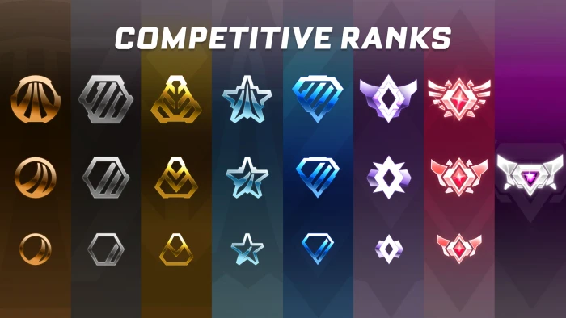

Do you want to be the best of the best?
Every video game has some sort of competitive ranking system, whether it be called ranks or elo, and Rocket League
is no different. The game is separated into two game type categories: casual and competitive. In competitive,
or widely known as "comp", there is a rank system in place, which puts players against other players of similar rank,
or MMR (Matchmaking Rating). MMR is the hidden numerical value that represents your Rocket League skill.

Image of each rank in Rocket League
Your MMR is always changing, and you gain MMR when you win, and lose MMR when you lose a match.
Rocket League has an eight-tiered rank system, with the lowest rank, Bronze, to the highest rank, Supersonic
Legend. These ranks are the representation of the hidden MMR value, and the goal is to be the best of the best.

Average amount of hours for ranks in Rocket League
Climbing the ranks in Rocket League takes a lot of time, and it's because of how difficult the game really is.
For example, the highest rank, Supersonic Legend, or SSL for short, usually takes up to 5000 hours of dedicated
playing time, and only the top 0.01% of players are at that rank. That translates to only about 1 in 10000 players!
This further demonstrates how Rocket League is one of, if not the most, difficult game in the world.
Rocket League sites
| Instagram || | X (Twitter) |
|---|---|
| YouTube || | RL Wiki |